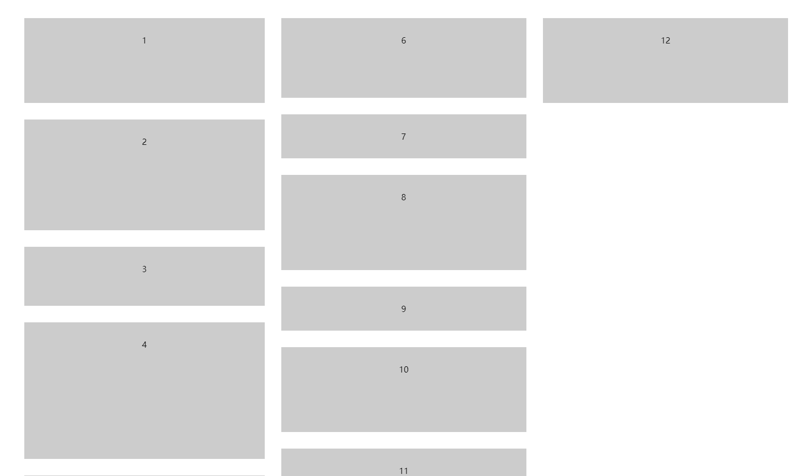
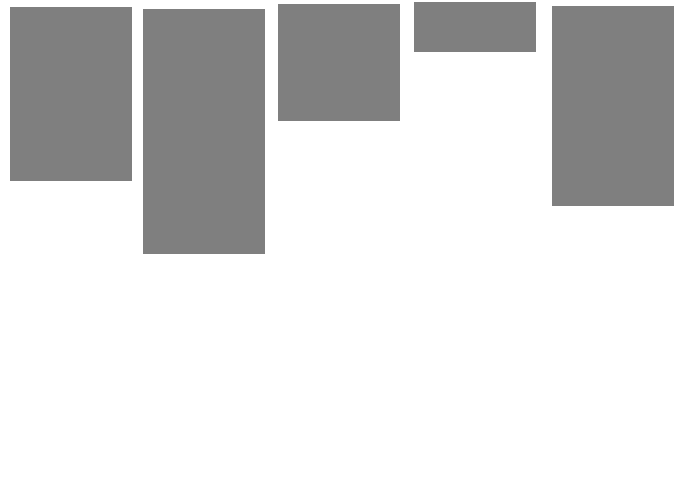
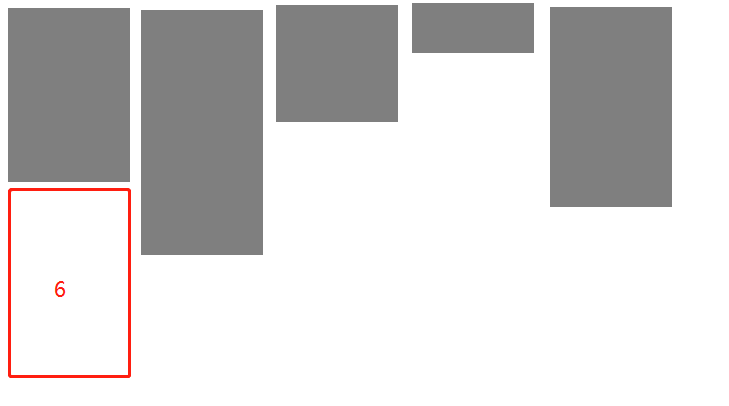
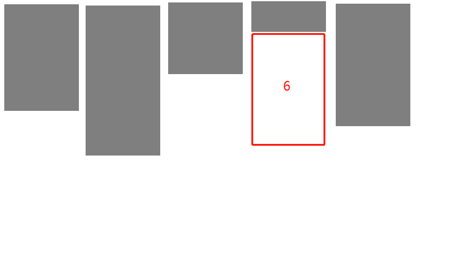
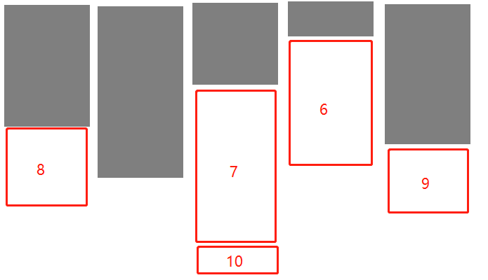

原文连接:https://www.cnblogs.com/lamian77/p/11596698.html
瀑布流 又称瀑布流式布局，是比较流行的一种网站页面布局方式。即多行等宽元素排列，后面的元素依次添加到其后，等宽不等高，根据图片原比例缩放直至宽度达到我们的要求，依次按照规则放入指定位置。
为什么使用瀑布流
瀑布流布局在我们现在的前端页面中经常会用的到，它可以有效的降低页面的复杂度，节省很多的空间，对于整个页面不需要太多的操作，只需要下拉就可以浏览用户需要看到的数据；并且，在当前这个APP至上的时代，瀑布流可以提供很好的用户体验，通过结合下拉刷新，上拉加载进行数据的懒加载等操作，对于用户的体验感来说是接近于满分的！
瀑布流的特点
其实瀑布流的特点就是参差不齐的排列方式，以及流式布局的扩展性，可以通过界面展示给用户多条数据，并且让用户可以有向下浏览的冲动。
瀑布流的代码实现
1.纯 css 瀑布流：（ multi-columns 方法 ）
// 这里是第一次接触到 column-columns 这个属性，这是一个可以设置将div元素中的文本分成几列
//默认值是：auto
//写法：
column-count:3;
-moz-column-count:3; /* Firefox */
-webkit-column-count:3; /* Safari and Chrome */
/* 注意：IE9及更早 IE 版本浏览器不支持 column-count 属性 */
//这里还会用到另一个属性 column-gap，用来调整边距，实现瀑布流布局
html结构代码如下：
1 <div class="demo-1">
2 <div class="item">
3 <div class="item_content content-lar" style="height:100px;" > 1</div>
4 </div>
5 <div class="item">
6 <div class="item_content content-sma"style="height:150px;" > 2</div>
7 </div>
8 <div class="item">
9 <div class="item_content content-mid"style="height:50px;" > 3</div>
10 </div>
11 <div class="item">
12 <div class="item_content content-sma" style="height:200px;" > 4</div>
13 </div>
14 <div class="item">
15 <div class="item_content content-mid"style="height:60px;" > 5 </div>
16 </div>
17 <div class="item">
18 <div class="item_content content-lar"style="height:90px;" > 6</div>
19 </div>
20 <div class="item">
21 <div class="item_content content-sma"> 7</div>
22 </div>
23 <div class="item">
24 <div class="item_content content-lar"style="height:120px;" > 8</div>
25 </div>
26 <div class="item">
27 <div class="item_content content-lar"> 9</div>
28 </div>
29 <div class="item">
30 <div class="item_content content-sma" style="height:100px;" > 10 </div>
31 </div>
32 <div class="item">
33 <div class="item_content content-mid"> 11 </div>
34 </div>
35 <div class="item">
36 <div class="item_content content-mid"style="height:100px;" > 12</div>
37 </div>
38 <!-- more items -->
39 </div>
CSS代码如下：
1 .demo-1{
2 -moz-column-count:3; /* Firefox */
3 -webkit-column-count:3; /* Safari 和 Chrome */
4 column-count:3;
5 -moz-column-gap: 1em;
6 -webkit-column-gap: 1em;
7 column-gap: 1em;
8 width: 80%;
9 margin:0 auto;
10 }
11 .item {
12 padding: 2em;
13 margin-bottom: 2em;
14 -webkit-column-break-inside: avoid;
15 break-inside: avoid; /*防止断点*/
16 background: #ccc;
17 text-align: center;
18 }
效果图：

这里有个弊端，这并不符合瀑布流的原理，如果使用纯css写瀑布流，则每一块都是从上往下排列，不能做到从左到右排列，并且不会识别哪一块图片放在哪个地方合适，若是再配合动态加载，效果会特别不好，所以只能通过JS来实现瀑布流。
那么这里用图片来分析一下我们想要的瀑布流是什么样的。
瀑布流的位置分析图解
如下方图片。假设一排放5张图片。当第一排排满足够多的等宽图片时，显示的是这样的。那么假如我们要放第6张图片的时候，应该放在什么位置呢？

如果按照我们的正常逻辑来想，应该是放在第一张图片下面，依次水平排列过去（如下图）

但现实并非如此！在瀑布流中，从第2行开始，接下去的每一张图片都会放在上行中高度最低的那一列图片下方。（如下图）

为什么呢？因为放置它之前，这一列的高度为所有列中最小，所以会放置在这个地方。
那么如果再继续放置下去，第七张图片应该放在第三列图片下方，以此类推。

所以每次加载图片时，会需要判断哪一列的图片累计的高度最小，那么下一张图片就放在哪一列，即瀑布流算法去判断图片的确定位置。
JS代码实现
实现思路：
- 设定每一列图片的宽度和间距
- 获取当前窗口的总宽度，从而根据图片宽度去旁段分成几列
- 获取所有图片元素，定义一个空数组来保存高度
- 遍历所有容器，开始判断 当页面加载完成，或页面宽度发生变化时，调用函数。
- 如果当前处于第一行时： 直接设置图片位置【 即 top为间距的大小，left为（当前图片的宽度+间距） * 当前图片的值+间距大小 】，并保存当前元素高度。
- 如果当前不处于第一行时：进行高度对比，通过遍历循环，拿到最小高度和相对应的索引，设置图片位置【 即 top为最小高度值+间距*2，left为 （当前图片的宽度+间距） * 索引 值+间距大小）】，并修改当前索引的高度为当前元素高度。
- 当页面加载完成，或页面宽度发生变化时，调用函数。
代码实现
1 <script type="text/javascript">
2 // 定义瀑布流算法函数
3 function fall() {
4 const minGap = 20; // 最小间距，让每一列的最小空隙可以自定义，避免太过拥挤的情况发生。但是，会通过计算得到真实的间距。
5 const itemWidth = 300; // 每一项的宽度，即当前每一个图片容器的宽度。保证每一列都是等宽不等高的。
6 const scrollBarWidth = getScrollbarWidth(); // 获取滚动条的宽度
7 const pageWidth = window.innerWidth - scrollBarWidth; // 获取当前页面的宽度 = window.innerWidth - 滚动条的宽度
8 const column = Math.floor(pageWidth / (itemWidth + minGap)); // 实际列数=页面宽度/(图片宽度+最小间距)
9 const gap = (pageWidth - itemWidth * column) / column/2; // 计算真实间距 = (页面宽度- 图片宽度*实际列数)/实际列数/2
10 const items = document.querySelectorAll('img'); // 获取所有的外层元素
11 const heightArr = []; // 定义一个空数组，保存最低高度。
12
13 // 获取滚动条的宽度
14 function getScrollbarWidth() {
15 const oDiv = document.createElement('div');//创建一个div
16 // 给div设置样式。随便定义宽高，只要能获取到滚动条就可以
17 oDiv.style.cssText = `width: 50px;height: 50px;overflowY: scroll;`
18 document.body.appendChild(oDiv);//把div添加到body中
19 const scrollbarWidth = oDiv.offsetWidth - oDiv.clientWidth;// 使最大宽度和可视宽度相减，获得到滚动条宽度。
20 oDiv.remove();//移除创建的div
21 return scrollbarWidth;//返回滚动条宽度
22 }
23
24
25 for (let i = 0; i < items.length; i++) {
26 // 遍历所有的外层容器
27 const height = items[i].offsetHeight;
28 // 如果当前处在第一行
29 if (i < column) {
30 // 直接设置元素距离上部的位置和距离左边的距离。
31 items[i].style.cssText = `top: ${gap}px;left: ${(itemWidth + gap) * i + gap}px`;
32 // 保存当前元素的高度。
33 heightArr.push(height);
34 } else {
35 // 不是第一行的话，就进行比对。
36 let minHeight = heightArr[0]; // 先保存第一项的高度
37 let minIndex = 0; // 保存第一项的索引值
38 for (let j = 0; j < heightArr.length; j++) {
39 // 通过循环遍历比对，拿到最小值和最小值的索引。
40 if (minHeight > heightArr[j]) {
41 minHeight = heightArr[j];
42 minIndex = j;
43 }
44 }
45 // 通过最小值为当前元素设置top值，通过索引为当前元素设置left值。
46 items[i].style.cssText = `top: ${minHeight + gap *2}px; left: ${(itemWidth + gap) * minIndex + gap}px`;
47 // 并修改当前索引的高度为当前元素的高度
48 heightArr[minIndex] = minHeight + gap + height;
49 }
50 }
51 }
52 // 页面加载完成调用一次。
53 window.onload = fall;
54 // 页面尺寸发生改变再次调用。
55 window.onresize = fall;
56 </script>
最终效果图：

总结瀑布流布局原理
- 设置图片宽度一致
- 根据浏览器宽度以及每列宽度计算出列表个数，列表默认0
- 当图片加载完成，所有图片依次放置在最小的列数下面
- 父容器高度取列表数组的最大值
引申知识点
- let，const以及var三者的区别
- 滚动加载图片（懒加载原理）
- 反撇号（`）基础知识
- style和style.cssTest 的区别